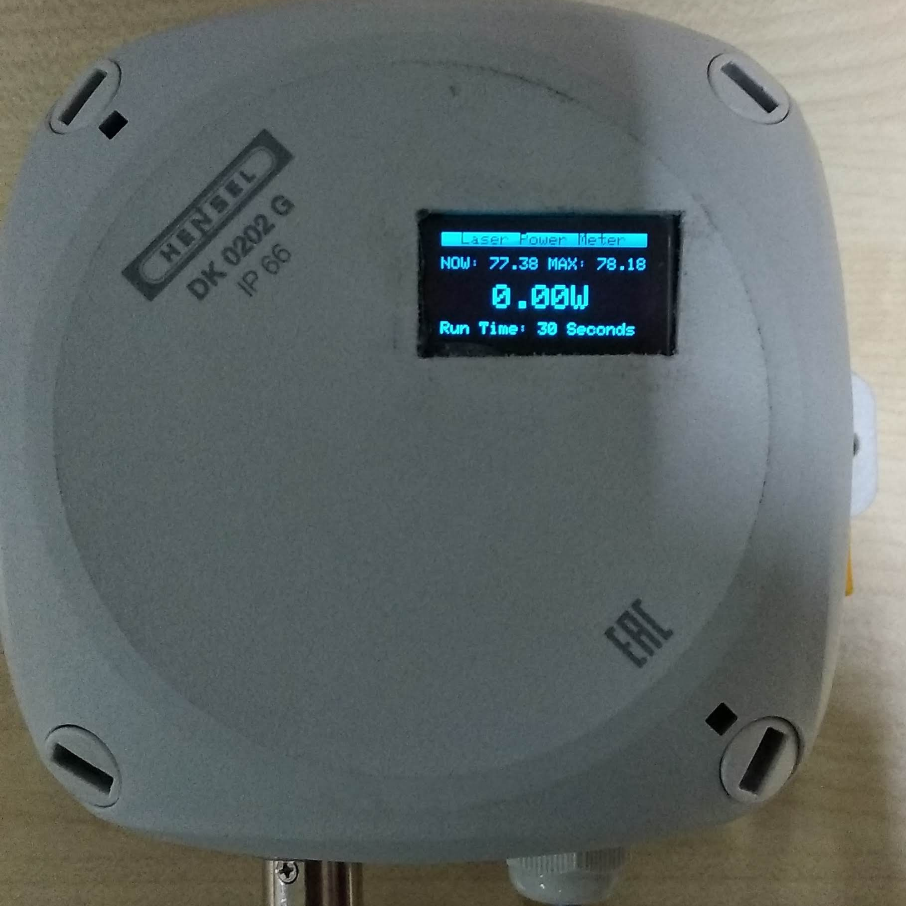
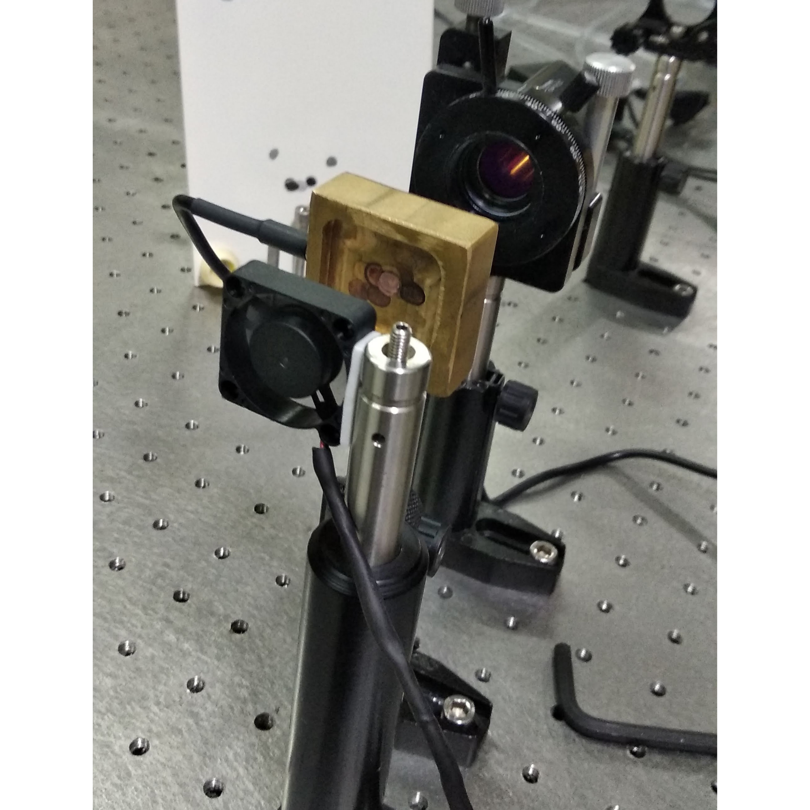

Laser Power Meter

At SRM University, a DST-funded research project was underway to study how ferromagnetic particles behave under high-power laser exposure. One of the basic requirements for the experiments was a reliable laser power meter. The problem was simple: commercial meters that can handle high-power lasers are extremely expensive.
I designed and built a low-cost laser power meter tailored to their needs. The focus was on creating a stable, accurate sensor module, a heat-handling structure suitable for high-intensity beams and electronics that could deliver consistent readings without drifting during long measurement cycles. The device allowed the team to capture real laser output data at a fraction of the cost of commercial instruments.

The Photonics Lab now uses this system as part of their experimental workflow, giving them dependable power measurements while keeping the overall project cost under control.